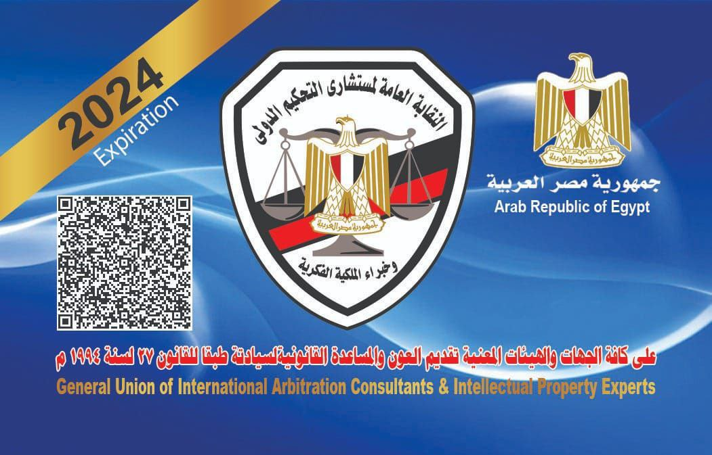
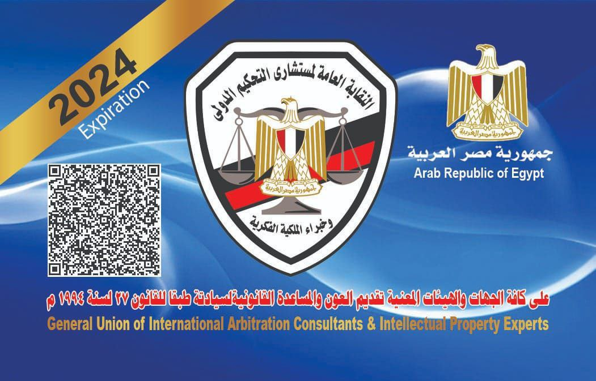

من نحن؟
النقابة العامة : تعمل علي قيد المحكمين والمستشارين والخبراء والفنيين والعاملين في نظام تحكيم المؤسسات.
الفرع الرئيسي في مدينة نصر بجانب مستشفي دار الفؤاد.

النقابة العامة : تعمل علي قيد المحكمين والمستشارين والخبراء والفنيين والعاملين في نظام تحكيم المؤسسات.
الفرع الرئيسي في مدينة نصر بجانب مستشفي دار الفؤاد.
شهادة مزاولة المهنة
يودع اسمه في 3 قضايا افتراضية داخل النقابة لتقوية الـCV
الدراسة من 4 إلى 5 أسابيع برايفت مع الدكتور (Online على Zoom)
استلام شهادة مزاولة المهنة الأساسية لافتتاح مكتب تحكيم دولي

من جامعة أسيوط - دراسة Online مع الدكتور
عمل رسالة دكتوراه بشرط وجود ماجستير مهني ودبلومات مهنية وشهادة مزاولة المهنة

اعتماد جامعة أسيوط
دراسة أونلاين
رسالة ماجستير بشرط الحصول على الدورات المهنية وشهادة مزاولة المهنة


خصومات من 10% إلى 50% حسب محافظة العميل.
يوجد تجميعات بأسماء وعناوين وأرقام جميع المستشفيات الخاصة ومعامل التحاليل والأشعات.
يمكن إضافة 3 أفراد من الأسرة ليصبح الكارت الطبي عائلي.
 
